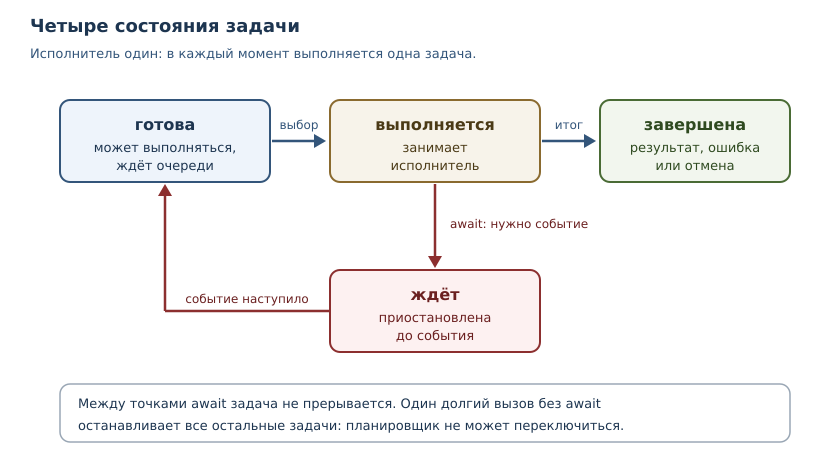
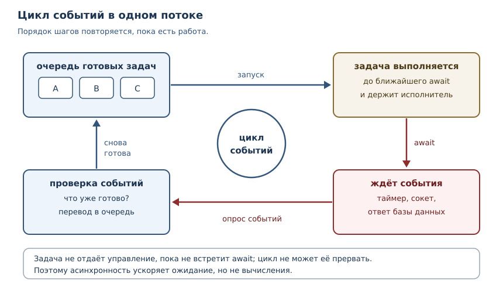

Асинхронность: asyncio
Модель задач, корутины, await, отмена и типичные ошибки асинхронного кода.
В этой главе
Сервер принимает запрос, идёт в базу данных за ответом и в это время не может
обслуживать другие запросы — так выглядит типичная программа, которая ждёт.
Ожидание занимает почти всё время работы: сеть отвечает за миллисекунды,
которые для процессора равны вечности. Асинхронность — способ не простаивать
в это время. В этой главе мы сначала разберём модель выполнения задач, а уже
потом посмотрим, как её реализует модуль asyncio из стандартной библиотеки.
Такой порядок важен: async и await — синтаксис, а модель задач — причина,
по которой этот синтаксис существует.
39.1 Что вы сможете после этой главы
- объяснять, чем задача отличается от потока и почему асинхронность не даёт параллелизма;
- писать корутины, запускать их и понимать, когда именно начинается исполнение;
- строить конкурентные вычисления через
asyncio.gatherиasyncio.TaskGroup; - корректно отменять задачи и освобождать ресурсы;
- находить в асинхронном коде блокирующие вызовы и убирать их.
39.2 Задача, которую решает асинхронность
В главе 38 мы разделили работу на две категории. Задачи, ограниченные процессором (CPU-bound), ускоряются процессами: каждому процессу достаётся свой интерпретатор и свой GIL. Задачи, ограниченные вводом-выводом (I/O-bound), упираются не в вычисления, а в ожидание внешнего мира: ответа сети, диска, базы данных.
Для ожидания потоки подходят, но у них есть цена: каждый поток резервирует стек, переключение между потоками делает операционная система, а совместно используемые данные требуют блокировок, иначе возникает состояние гонки. Если в программе тысяча одновременных соединений, тысяча потоков — это дорого, а тысяча блокировок — это источник дефектов, которые трудно воспроизвести.
Асинхронный подход меняет саму единицу работы. Вместо «поток, который ждёт» появляется задача — единица работы, которую можно приостановить в известной точке и позже продолжить с того же места. Пока задача ждёт ответа, исполнитель занимается другими задачами. Один поток способен вести тысячи задач, потому что ожидание не занимает поток: оно зарегистрировано как «сообщите, когда будет готово».
39.3 Модель выполнения задач
Прежде чем говорить о Python, опишем модель, которая годится для любой асинхронной системы — от планировщика операционной системы до сервера приложений.
Задача — это работа, у которой есть начало, конец и промежуточные точки приостановки. В каждый момент задача находится в одном из состояний:
| Состояние | Что означает |
|---|---|
| готова | может выполняться, ждёт своей очереди |
| выполняется | прямо сейчас занимает исполнителя |
| ждёт | приостановлена до внешнего события (данные пришли, таймер сработал) |
| завершена | вернула результат или завершилась ошибкой (в том числе отменой) |
Состояния и переходы между ними показаны на рисунке.

Ключевое свойство модели: между точками приостановки задача выполняется целиком, без переключений. Такую схему называют кооперативной многозадачностью (cooperative multitasking): задача сама отдаёт управление, и никто не может прервать её посреди вычисления. В этом её сила и её слабость. Сила — не нужны блокировки для защиты данных между точками приостановки: пока задача работает, её никто не прервёт. Слабость — если задача не приостанавливается, она блокирует всех остальных: у планировщика нет возможности её вытеснить.
Из модели следуют три правила, которые объясняют почти все ошибки асинхронного кода.
- Исполнитель один. В один момент времени выполняется ровно одна задача. Асинхронность — это конкурентность, а не параллелизм: ускорения вычислений она не даёт.
- Приостановка только в явных точках. Пока код не встретил
await, он владеет исполнителем безраздельно. - Ожидание должно быть асинхронным. Если задача ждёт, занимая поток, планировщик не может запустить других.
Теперь посмотрим, как эта модель выглядит в Python.
39.4 Корутины и await
Корутина — функция, объявленная через async def. Её особенность в том,
что при вызове она не исполняет тело, а возвращает объект-корутину, который
можно приостанавливать и возобновлять.
import asyncio
async def greet():
print("корутина начала работу")
return "привет"
coro = greet()
print("после вызова корутины ничего не напечаталось")
print(asyncio.run(coro))
после вызова корутины ничего не напечаталось
корутина начала работу
привет
Обратите внимание на порядок строк: вызов greet() не напечатал ничего.
Тело корутины начинает исполняться только тогда, когда её кто-то запустил —
здесь это сделала функция asyncio.run. Корутина похожа на генератор из
главы 21: оба объекта хранят приостановленное исполнение. Разница в том, что
генератор отдаёт значения через yield по требованию цикла for, а корутина
приостанавливается на await и возвращает ровно один результат.
async / await — синтаксис асинхронного кода: async def объявляет
корутину, await приостанавливает её до завершения ожидаемого объекта.
Внутри await исполнитель свободен и может заняться другой готовой задачей.
import asyncio
async def fetch(name, value):
await asyncio.sleep(0)
print(f"{name} готов")
return value * 2
async def main():
results = await asyncio.gather(fetch("one", 1), fetch("two", 2), fetch("three", 3))
print(results)
asyncio.run(main())
one готов
two готов
three готов
[2, 4, 6]
Порядок здесь не случаен: gather запускает три корутины как задачи, каждая
доходит до await asyncio.sleep(0) — это точка приостановки, которая сразу
возвращает управление планировщику, — и только потом все три печатают
результат. asyncio.sleep(0) не ждёт времени: он уступает очередь.
Углубление: почему корутину нельзя запустить дважды
Корутина — это одноразовый объект с состоянием. После завершения она
закрыта, и повторный await поднимает исключение.
import asyncio
async def hello():
return "привет"
async def main():
coro = hello()
print(await coro)
print(await coro)
asyncio.run(main())
RuntimeError: cannot reuse already awaited coroutine
39.5 Awaitable-объекты
Awaitable-объект — объект, который можно передать в await. В Python это
любой объект, реализующий метод __await__; проще запомнить три частых вида:
- корутина — результат вызова
async def-функции; - задача (
asyncio.Task) — корутина, поставленная в план исполнения; - future (
asyncio.Future) — низкоуровневый контейнер будущего результата, которым управляет код, а не планировщик.
Различие удобно проверить функцией inspect.isawaitable.
import asyncio
import inspect
async def hello():
return "привет"
async def main():
coro = hello()
print("корутина:", inspect.isawaitable(coro))
coro.close()
task = asyncio.create_task(hello())
print("задача:", inspect.isawaitable(task))
await task
future = asyncio.get_running_loop().create_future()
print("future:", inspect.isawaitable(future))
print("число:", inspect.isawaitable(42))
asyncio.run(main())
корутина: True
задача: True
future: True
число: False
await работает с любым из этих объектов, но смысл разный: await корутины
запускает её прямо в текущей задаче, а await задачи означает «подожди, пока
другая задача закончит». Второй вариант позволяет получить конкурентность.
Углубление: что можно и что нельзя ожидать
await применим только к awaitable-объектам. Число, строка или обычная
функция не умеют приостанавливать исполнение, поэтому попытка их ожидать —
ошибка типа, а не «пустое ожидание».
import asyncio
async def main():
await 42
asyncio.run(main())
TypeError: 'int' object can't be awaited
39.6 Цикл событий
Кто-то должен решать, какую готовую задачу запустить следующей, и следить за тем, чьё ожидание закончилось. Этот компонент называют циклом событий (event loop): планировщик, который в одном потоке по очереди запускает готовые задачи, переключается между ними в точках приостановки и переводит задачи из ожидания в готовность, когда наступает внешнее событие.

У цикла событий две очереди работы. Первая — готовые задачи: их можно
запускать немедленно. Вторая — ожидающие события: таймеры, готовность сокета,
завершение операции ввода-вывода. Цикл забирает задачу из первой очереди,
исполняет её до await, а затем смотрит, не наступило ли чьё-то событие, и
переводит соответствующую задачу обратно в готовые. Такой цикл повторяется,
пока есть работа.
В asyncio цикл создаётся и запускается функцией asyncio.run. Она делает
три вещи: создаёт новый цикл событий, запускает переданную корутину как
задачу и закрывает цикл, когда задача завершилась. Именно поэтому точкой
входа асинхронной программы служит asyncio.run(main()), а не вызов
корутины напрямую.
import asyncio
async def main():
loop = asyncio.get_running_loop()
print("цикл запущен:", loop.is_running())
print("текущая задача существует:", asyncio.current_task() is not None)
asyncio.run(main())
цикл запущен: True
текущая задача существует: True
Важная деталь: asyncio.run не допускает вызов из уже работающего цикла.
Попытка запустить второй цикл внутри корутины поднимает RuntimeError, и это
правильно: два цикла в одном потоке конкурировали бы за одни и те же события.
Углубление: цикл и потоки
Цикл событий живёт в одном потоке и не потокобезопасен: трогать
задачи и цикл из другого потока напрямую нельзя. Если синхронный код в
отдельном потоке должен вернуть результат в цикл, используют
loop.call_soon_threadsafe или asyncio.run_coroutine_threadsafe. На практике
чаще достаточно asyncio.to_thread, который сам заботится о передаче
результата обратно в цикл.
39.7 Задачи
Задача (task) — корутина, поставленная в план исполнения циклом
событий. Задачу создаёт функция asyncio.create_task: она оборачивает
корутину в объект, который цикл будет двигать самостоятельно, и возвращает
его. С этого момента задача живёт своей жизнью: её не нужно ожидать, чтобы
она начала выполняться, — но результат нужно забрать.
import asyncio
async def task(name):
print(f"{name}: шаг 1")
await asyncio.sleep(0)
print(f"{name}: шаг 2")
async def main():
first = asyncio.create_task(task("A"))
second = asyncio.create_task(task("B"))
print("main: обе задачи запущены")
await asyncio.gather(first, second)
asyncio.run(main())
main: обе задачи запущены
A: шаг 1
B: шаг 1
A: шаг 2
B: шаг 2
Разбор по шагам. create_task создаёт две задачи и ставит их в очередь.
main доходит до gather и приостанавливается. Цикл берёт первую задачу,
та печатает «шаг 1» и уступает на sleep(0); затем вторая делает то же.
Теперь обе ждут, очередь пуста, но sleep(0) уже готов к возобновлению,
поэтому задачи возвращаются в неё в том же порядке. Затем каждая печатает
«шаг 2» и завершается. Порядок строк здесь определяется моделью, а не
случайностью.
Задача хранит своё состояние. У неё есть методы done(), cancelled(),
result() и exception(). Если задача завершилась ошибкой, исключение
поднимется в том месте, где результат забирают.
import asyncio
async def fail():
await asyncio.sleep(0)
raise ValueError("задача сломалась")
async def main():
task = asyncio.create_task(fail())
await task
asyncio.run(main())
ValueError: задача сломалась
Углубление: задача без владельца
Если создать задачу и не сохранить ссылку, сборщик мусора может уничтожить её
до завершения, а цикл событий — сообщить, что исключение задачи не было
получено. Правило простое: у каждой задачи должен быть владелец, который
дождётся её результата. asyncio.TaskGroup и asyncio.gather делают это
автоматически.
39.8 Конкурентность и порядок выполнения
Главная ошибка новичка — писать await подряд там, где нужна
конкурентность. Посмотрите на разницу.
import asyncio
async def job(name):
print(f"{name}: шаг 1")
await asyncio.sleep(0)
print(f"{name}: шаг 2")
async def sequential():
await job("A")
await job("B")
async def concurrent():
await asyncio.gather(job("A"), job("B"))
print("последовательно")
asyncio.run(sequential())
print("конкурентно")
asyncio.run(concurrent())
последовательно
A: шаг 1
A: шаг 2
B: шаг 1
B: шаг 2
конкурентно
A: шаг 1
B: шаг 1
A: шаг 2
B: шаг 2
В последовательном варианте каждая работа ждёт полного завершения предыдущей:
пока A спит, B даже не началась. В конкурентном обе доходят до точки
ожидания, и пока A ждёт, B успевает сделать первый шаг. Для операций
ввода-вывода это разница между суммой времён и максимумом времён.
39.9 Структурная конкурентность: TaskGroup
Собирать задачи вручную и следить за их исключениями утомительно. Начиная с
Python 3.11 в стандартной библиотеке есть asyncio.TaskGroup — асинхронный
контекстный менеджер, который создаёт задачи, ждёт их все и корректно
обрабатывает ошибки.
import asyncio
async def ok(name):
await asyncio.sleep(0)
print(f"{name} завершилась")
async def fail():
await asyncio.sleep(0)
raise ValueError("сломалось")
async def main():
try:
async with asyncio.TaskGroup() as group:
group.create_task(ok("первая"))
group.create_task(fail())
group.create_task(ok("вторая"))
except* ValueError as errors:
print("перехвачено:", type(errors.exceptions[0]).__name__, errors.exceptions[0])
asyncio.run(main())
первая завершилась
вторая завершилась
перехвачено: ValueError сломалось
Слово «структурная» здесь означает: группа живёт внутри блока async with,
и выйти из блока раньше, чем завершатся все её задачи, нельзя. Ошибка одной
задачи не теряется: она приходит как ExceptionGroup, который разбирают
конструкцией except*. Так исключения не «пропадают в фоне», а попадают
туда, где задачу создали.
39.10 Отмена задачи
Отмена задачи — механизм, который прекращает её работу. Вызванный
task.cancel() не убивает корутину мгновенно: он просит цикл событий
возбудить asyncio.CancelledError в ближайшей точке await. Задача успевает
выполнить finally и освободить ресурсы, а затем завершается в состоянии
«отменена».
import asyncio
async def long_job():
print("начали работу")
try:
await asyncio.sleep(10)
except asyncio.CancelledError:
print("получили отмену, убираем за собой")
raise
finally:
print("блок finally выполнен")
async def main():
task = asyncio.create_task(long_job())
await asyncio.sleep(0)
task.cancel()
try:
await task
except asyncio.CancelledError:
print("задача отменена:", task.cancelled())
asyncio.run(main())
начали работу
получили отмену, убираем за собой
блок finally выполнен
задача отменена: True
Три правила отмены. Первое: CancelledError нужно пробрасывать дальше или
поднимать заново после уборки — иначе отмена «проглатывается» и задача
продолжает работу, о которой её никто не просил. Второе: точка отмены — это
await; код между точками приостановки выполнится до конца. Третье: если
задача уже завершена, cancel() вернёт False и ничего не сделает.
39.11 Таймауты
Ожидание без ограничения — это зависание при первой же проблеме. Для
ограничения времени в asyncio есть asyncio.timeout (Python 3.11+):
асинхронный контекстный менеджер, который отменяет задачу, если блок не
успел завершиться.
import asyncio
async def slow():
await asyncio.sleep(10)
return "готово"
async def main():
try:
async with asyncio.timeout(0.01):
await slow()
except TimeoutError:
print("не успели за отведённое время")
asyncio.run(main())
не успели за отведённое время
Внутри asyncio.timeout поднимается TimeoutError — встроенное исключение,
которое в асинхронном контексте означает именно истечение срока. Старый
способ asyncio.wait_for(coro, timeout) делает то же самое, но требует
оборачивать каждую операцию отдельно.
39.12 Асинхронные контекстные менеджеры
Асинхронный контекстный менеджер — объект, у которого есть методы
__aenter__ и __aexit__; он используется в инструкции async with.
Устройство то же, что у обычного with из главы 19, но вход и выход могут
приостанавливать задачу: открыть соединение, дождаться закрытия, освободить
ресурс.
import asyncio
class AsyncResource:
def __init__(self, name):
self.name = name
async def __aenter__(self):
print(f"{self.name}: открыт")
return self
async def __aexit__(self, exc_type, exc, tb):
print(f"{self.name}: закрыт")
return False
async def main():
async with AsyncResource("ресурс") as resource:
print(f"работаем с {resource.name}")
try:
async with AsyncResource("второй"):
raise ValueError("ошибка внутри блока")
except ValueError as error:
print("поймали:", error)
asyncio.run(main())
ресурс: открыт
работаем с ресурс
ресурс: закрыт
второй: открыт
второй: закрыт
поймали: ошибка внутри блока
__aexit__ вызывается всегда — и при нормальном выходе, и при исключении.
Возвращённое False означает «исключение не подавлено», поэтому оно
поднимается дальше и ловится снаружи. Это ровно та же семантика, что у
обычного контекстного менеджера.
39.13 Блокирующие вызовы
Блокирующий вызов — вызов, который занимает поток на всё время операции и не отдаёт управление циклу событий. Пока он выполняется, все остальные задачи стоят.
import asyncio
def blocking_work():
total = 0
for number in range(300_000):
total += number
return total
async def blocking_task():
print("A: начало тяжёлой работы")
total = blocking_work()
print("A: работа закончена")
return total
async def light_task():
print("B: хочу выполниться")
async def main():
first = asyncio.create_task(blocking_task())
second = asyncio.create_task(light_task())
await asyncio.sleep(0)
await second
print("main: после B")
await first
asyncio.run(main())
A: начало тяжёлой работы
A: работа закончена
B: хочу выполниться
main: после B
Задача B получила управление только после того, как A закончила: внутри
blocking_work нет ни одной точки приостановки. Лечится это вынесением
блокирующей работы в отдельный поток через asyncio.to_thread.
import asyncio
def blocking_work():
total = 0
for number in range(300_000):
total += number
return total
async def blocking_task():
print("A: начало тяжёлой работы")
total = await asyncio.to_thread(blocking_work)
print("A: работа закончена")
return total
async def light_task():
print("B: хочу выполниться")
async def main():
first = asyncio.create_task(blocking_task())
second = asyncio.create_task(light_task())
await asyncio.sleep(0)
await second
print("main: после B")
await first
asyncio.run(main())
A: начало тяжёлой работы
B: хочу выполниться
main: после B
A: работа закончена
Теперь B выполняется, пока blocking_work считает в другом потоке.
Углубление: какие вызовы блокируют
Блокируют почти все привычные операции: time.sleep, чтение файла, requests
из главы 35, sqlite3 из главы 36, любой цикл с тяжёлыми вычислениями. Для
каждой из них есть асинхронная альтернатива или способ вынести работу в
поток. Правило: в корутине допустимы только операции, которые
приостанавливают задачу, а не занимают поток.
39.14 Типичные ошибки
- Забыть
await. Вызов корутины безawaitсоздаёт объект и ничего не делает; Python предупреждает об этом при сборке мусора. Проверяйте, что каждая корутина где-то awaited. - Ждать по очереди вместо конкурентности. Цепочка
awaitподряд выполняет операции последовательно. Если операции независимы, нужныgatherилиTaskGroup. - Блокировать цикл событий.
time.sleep, синхронный HTTP-клиент и тяжёлые вычисления останавливают все задачи. Используйтеasyncio.sleep, асинхронные библиотеки иasyncio.to_thread. - Терять задачи. Задача без владельца может быть уничтожена сборщиком
мусора, а её ошибка — потеряна. Дожидайтесь задач в
TaskGroup. - Проглатывать
CancelledError. Если поймать отмену и не пробросить её дальше, задача продолжит работу, хотя её отменили. - Отменять без уборки. Ресурсы освобождайте в
finallyили в__aexit__: отмена не гарантирует, что код послеawaitвыполнится. - Запускать
asyncio.runвнутри корутины. Вложенный цикл запрещён;asyncio.to_threadне обходит этот запрет, а решает другую задачу — вызов синхронного кода из асинхронного.
39.15 Упражнения
1. Порядок строк
Не запуская код, предскажите порядок вывода, затем проверьте:
import asyncio
async def one():
print("один")
await asyncio.sleep(0)
print("один после паузы")
async def two():
print("два")
async def main():
await asyncio.gather(one(), two())
asyncio.run(main())
Объясните, почему строки идут именно так.
2. Последовательное и конкурентное ожидание
Даны три корутины, каждая печатает своё имя и делает await asyncio.sleep(0).
Напишите две функции: одну, которая запускает их последовательно, и вторую —
конкурентно через gather. Сравните порядок вывода.
3. Исправление ошибки
Корутина не выполняется, программа завершается без вывода — только с
предупреждением RuntimeWarning о корутине, которую так и не дождались:
import asyncio
async def report():
print("отчёт готов")
async def main():
report()
asyncio.run(main())
Найдите причину, исправьте код и объясните, почему Python не поднимает исключение сразу.
4. Блокирующий вызов
В асинхронной программе вызывается time.sleep(1) внутри корутины. Опишите,
что при этом происходит с остальными задачами, и предложите два исправления
(одно для ожидания, одно для вычислений).
5. Отмена задачи
Напишите корутину, которая в цикле каждые await asyncio.sleep(0) увеличивает
счётчик, и отмените её через две итерации. В finally выведите итоговое
значение счётчика. Обеспечьте, чтобы отмена не проглатывалась.
6. Таймаут
Напишите функцию run_with_limit(coro, seconds), которая запускает корутину и
возвращает её результат, но не дольше указанного времени. При истечении срока
верните строку "таймаут", не пробрасывая исключение.
7. Асинхронный контекстный менеджер
Реализуйте класс-счётчик, который в __aenter__ печатает «начало», а в
__aexit__ — «конец», и используйте его в async with. Проверьте, что
«конец» печатается и при исключении внутри блока.
8. Задача как объект
Создайте задачу, дождитесь её завершения и выведите значения task.done(),
task.cancelled() и результат task.result(). Объясните, что означает
каждое значение.
9. Модель выполнения
В одном потоке запущены две задачи. Первая считает сумму чисел от 0 до
1 000 000 без единого await. Вторая должна напечатать сообщение. Объясните,
когда напечатается сообщение второй задачи и почему. Как изменить программу,
чтобы сообщение появилось раньше?
10. Мини-задача: конкурентная загрузка
Напишите асинхронную функцию load_all(sources), где sources — список
кортежей (имя, значение). Функция запускает для каждого элемента задачу,
которая «загружает» данные через await asyncio.sleep(0) и возвращает
f"{имя}: {значение}". Соберите результаты в список в порядке исходных
элементов и обработайте случай, когда одна из задач завершается ошибкой
ValueError, не теряя остальные результаты.
39.16 Проверка понимания
- Чем задача отличается от потока? Что у них общего?
- Почему асинхронность не ускоряет вычисления на одном ядре?
- Когда начинает исполняться корутина: при вызове или при
await? - Что делает
asyncio.sleep(0)и зачем он нужен? - Чем
asyncio.gatherотличается от двух последовательныхawait? - Почему
time.sleepв корутине — ошибка? - Что произойдёт, если поймать
CancelledErrorи не пробросить его дальше? - Как
TaskGroupгарантирует, что ошибка задачи не потеряется?
39.17 Связи
Асинхронность продолжает разговор о конкурентности из главы 38: там были
потоки, процессы и GIL, здесь — задачи и цикл событий. Корутины выросли из
генераторов главы 21, а async with повторяет контекстные менеджеры главы 19.
Отмена и таймауты опираются на исключения главы 10 и трассировку главы 11.
Дальше — производительность и профилирование: мы научимся измерять, где программа тратит время, и отличать настоящую оптимизацию от переписывания. А в главе 48 асинхронность пригодится в проекте — конкурентном сборщике данных.